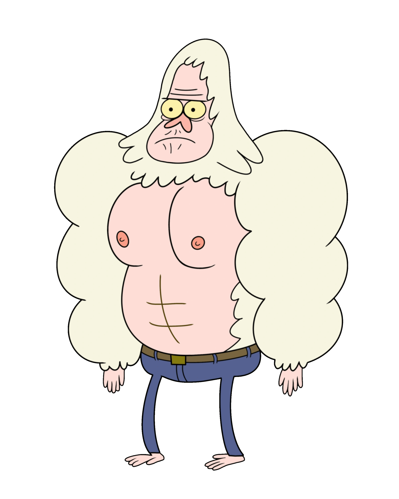

Personaggi Principali
Skips
Skips è uno Yeti immortale e saggio che ha 400 anni. Lavora come giardiniere nel parco ed è sempre pronto a risolvere i problemi causati da Mordecai e Rigby. Il suo nome originale era Walks, ma lo ha cambiato dopo la morte della sua amata Mona.